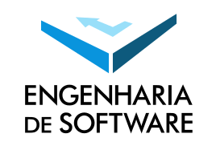

Aprensentação
Software é um dos mais complexos e fascinantes artefatos produzidos pelo homem e está presente em todos os lugares e em todas as atividades realizadas na sociedade moderna. A Engenharia de Software é a aplicação sistemática de conhecimentos, métodos e experiência científicas e tecnológicas à concepção, implementação, testes e documentação de software (ISO/IEC 2382:2015 Information technology -- Vocabulary). O curso de Bacharelado em Engenharia de Software (BES) da UFG foi criado em 2008, como o primeiro curso de graduação em Engenharia de Software no País, e tem como objetivo formar profissionais aptos a contribuir efetivamente com a produção de softwares de qualidade seguindo princípios éticos e postura profissional. Profissionais de Engenharia de Software formados pelo BES da UFG são altamente valorizados por um mercado global de software que está em constante crescimento. Essa valorização decorre principalmente da sólida formação teórica, associada a experiências práticas de projetos baseados em software, que formam engenheiros e engenheiras de software capazes de contribuir tanto nos aspectos técnicos quanto na gestão de empreendimentos que envolvem softwares.
Dados Relevantes
Modalidade : BachareladoPeríodo : Noturno
Duração : 8 Semestre
Entrada : 40 vagas no 1° semestre do ano
Forma de Ingresso : Sistema de Seleção Unificada (SISU)
Localização : Instituto de Informática (INF-UFG), Campus Samambaia, Goiânia-GO
Voltar